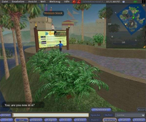
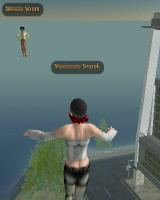
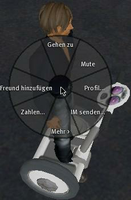
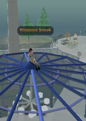

Second Life
Dieser Artikel wurde für die folgenden Ubuntu-Versionen getestet:
Dieser Artikel ist mit keiner aktuell unterstützten Ubuntu-Version getestet! Bitte diesen Artikel testen und das getestet-Tag entsprechend anpassen.
Zum Verständnis dieses Artikels sind folgende Seiten hilfreich:
Second Life  ist ein virtueller Raum, welcher die Möglichkeit bietet, mit einem Charakter in einer virtuellen Welt zu leben. Die persönliche Spielfigur (Avatar) kann interagieren, handeln, kommunizieren und sogar Gegenstände erschaffen. Seit Januar 2007 ist der Quellcode des Clients unter der GPL-Lizenz frei verfügbar. Interessant ist, dass das Programm kein Ziel oder Ende hat, die Spieler können in dieser "zweiten Welt" selbst dessen Content bestimmen. Auch besitzt das Spiel eine eigene Währung sowie eine integrierte Skriptsprache. Das virtuelle Geld kann man sich auch als reales Geld auszahlen lassen, aber man kann auch reales Geld in virtuelles Geld umwandeln. Teilweise erinnert das Spiel an andere MMORPGs, wie z.B. World of Warcraft - mit dem durchaus fundamentalen Unterschied, dass es keinen festen Spielmechanismus gibt.
ist ein virtueller Raum, welcher die Möglichkeit bietet, mit einem Charakter in einer virtuellen Welt zu leben. Die persönliche Spielfigur (Avatar) kann interagieren, handeln, kommunizieren und sogar Gegenstände erschaffen. Seit Januar 2007 ist der Quellcode des Clients unter der GPL-Lizenz frei verfügbar. Interessant ist, dass das Programm kein Ziel oder Ende hat, die Spieler können in dieser "zweiten Welt" selbst dessen Content bestimmen. Auch besitzt das Spiel eine eigene Währung sowie eine integrierte Skriptsprache. Das virtuelle Geld kann man sich auch als reales Geld auszahlen lassen, aber man kann auch reales Geld in virtuelles Geld umwandeln. Teilweise erinnert das Spiel an andere MMORPGs, wie z.B. World of Warcraft - mit dem durchaus fundamentalen Unterschied, dass es keinen festen Spielmechanismus gibt.
Gut ist auch, dass der Linux-Client alle Funktionen unterstützt, die auch der Windows-Client bietet. Außerdem sagen manche Nutzer, der Client sei stabiler als das Windows-Pendant und etwas schneller. Linden Lab führt die höhere Stabilität darauf zurück, dass die Treiber-Implementierung von OpenGL schon stabiler sei als die von Direct3D für Windows (Quelle ).
Eine Basis-Mitgliedschaft ist kostenlos, allerdings kann man nur mit einer kostenpflichtigen Mitgliedschaft Land erwerben.
|  |
| Spielszene |
Account anlegen¶
Um das Programm nutzen können, muss man zuvor mindestens einen kostenlosen Account angelegt haben. Dies kann man auf dieser Webseite tun. Mit den Daten kann man sich dann später im Client anmelden.
Installation¶
Man kann entweder den offiziellen Client "SL Viewer" gleich aus dem entpackten Archiv heraus starten oder den Quellcode gemäß dieser Anleitung  kompilieren.
kompilieren.
Einstellungen befinden sich im Ordner ~/.secondlife/, egal welche Methode man benutzt.
Manuell¶
Um das Spiel direkt nach dem Herunterladen des Archivs aus diesem heraus starten zu können, geht man folgendermaßen vor:
Die aktuelle Version des Programms "SL Viewer" von der Hersteller-Webseite
 als Archiv Second_Life_VERSION_i686.tar.bz2 herunterladen (ca. 55 MiB) und entpacken [1].
als Archiv Second_Life_VERSION_i686.tar.bz2 herunterladen (ca. 55 MiB) und entpacken [1]. Die Datei secondlife im Ordner SecondLife_VERSION/ausführbar machen [2].
Zum Starten wechselt man mit dem Terminal in den beim Entpacken entstandenen Ordner und gibt folgenden Befehl ein [3]:
./secondlife
Benötigt man einen Eintrag im Startmenü, muss man sich einen Programmstarter [4] erstellen.
Deinstallation¶
Sollte man Second Life deinstallieren wollen, so löscht man einfach den Ordner und die persönlichen Einstellungen (siehe oben).
64-Bit¶
Nutzer eines 64-Bit-Betriebssystems benötigen noch das folgende Paket [5]:
ia32-libs (universe, nur bis Ubuntu 13.04)
 mit apturl
mit apturl
Paketliste zum Kopieren:
sudo apt-get install ia32-libs
sudo aptitude install ia32-libs
Konfiguration¶
Client auf Deutsch¶
Um den Client auf Deutsch umzustellen, muss man bei Anmeldebildschirm so vorgehen:
Den Button "Preferences" auswählen
Den Reiter "General" wählen
Unter "Language:" im Drop-Down-Menü "Deutsch (German)" auswählen
Die Einstellungen mit "OK" bestätigen
Den Clienten neustarten
Nun kann man weitere Einstellungen vornehmen.
Steuerung¶
|  |
| Mit seinem Charakter kann man durch Second Life fliegen. |
|  |
| Wenn man mit der rechten Maustaste auf eine Person oder einen Gegenstand klickt, erscheint ein Menü mit Optionen. |
|  |
| Und wenn man will, setzt man sich einfach mal irgendwo hin. Hauptsache schwindelfrei ... |
Navigation¶
| Navigation | Pfeiltasten | Ziffernblock | Buchstaben |
| vorwärts | ↑ | 8 | W |
| links drehen | ← | 4 | A |
| rechts drehen | → | 6 | D |
| rückwärts | ↓ | 2 | S |
| ducken | 3 | C | |
| springen (kurz drücken) | 9 | E | |
| fliegen (länger drücken) | 9 | E | |
| landen | 7 | F | |
| höher | Pos1 | ||
| tiefer | Ende | ||
| immer rennen | ⇧ + R | ||
Optionen¶
Um die Optionen aufzurufen, die für eine bestimmte Person oder Gegenstand verfügbar sind, muss man diese / diesen mit der rechten Maustaste anklicken.
Kamerasteuerung¶
| Kamerasteuerung | Tastenkombination |
| zoomen | Alt + linke Maustaste drücken und nach oben / unten bewegen |
| drehen (in der selben Ebene) | Alt + linke Maustaste drücken und nach links / rechts bewegen |
| drehen (in allen Ebenen) | Strg + Alt + linke Maustaste drücken und nach links / rechts bewegen |
| zur normalen Ansicht zurückkehren | Esc |
Sonstiges¶
| Sonstiges | Tastenkombination |
| nach Hause | Strg + ⇧ + H |
| Freunde ... | Strg + ⇧ + F |
| Foto machen | Strg + ⇧ + S |
| erweiterten Client Modus | Strg + Alt + D |

Infobox¶
| Second Life | |
| Sprache: |             |
| Veröffentlichung: | 2003 |
| Publisher: | Linden Lab |
| Systemvoraussetzungen: | Internet (DSL), min. 1 GHz, 512 MB RAM, bis zu ca. 1 GB freier Festplattenspeicher, 3D-Grafikkarte mit min. 128 MB |
| Medien: | Download |
| Läuft mit: | native |
- Erstellt mit Inyoka
-
 2004 – 2017 ubuntuusers.de • Einige Rechte vorbehalten
2004 – 2017 ubuntuusers.de • Einige Rechte vorbehalten
Lizenz • Kontakt • Datenschutz • Impressum • Serverstatus -
Serverhousing gespendet von